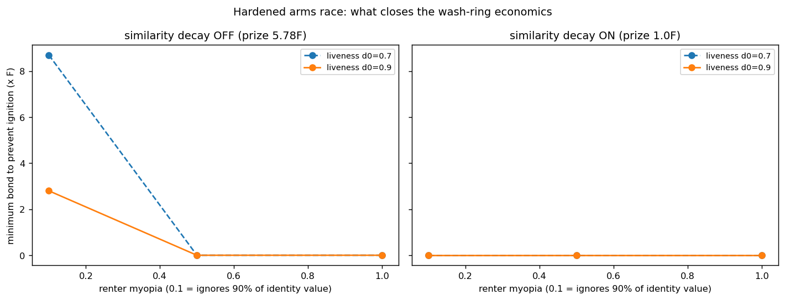

In plain language
Companion to the committed run in this folder (results_hardened_arms_race.json, hardened_arms_race_sim.py). This drill asks the scariest question about any fraud defense: not "does it catch today's cheater?" but "does fighting the cheater start a war we lose?" Written to the vault's plain-language tradition.
The fear: spy-vs-spy with no winner
Every fraud filter invites a smarter fraud. You block the bots, they build better bots; you spot the fakes, they make fakes that dodge your spotter. The nightmare isn't losing one round — it's an arms race that "ignites," where each escalation pays for the next and the cheaters keep climbing forever. A defense that wins today but ignites an unwinnable escalation is worse than useless; it's a trap.
So this drill didn't test whether EDEN catches a fixed cheater. It let the cheater keep escalating — spending more to evade better — and asked whether that escalation ever stops paying. If the best possible evasion still loses money, the race fizzles instead of igniting.
The knob that matters isn't the filter — it's what a caught cheater loses
The drill swept three things: how good the detector is, how big a security deposit (bond) earning-at-scale requires, and how much the cheater cares about keeping their one lifetime identity (a patient cheater values it; a reckless "smash and grab" cheater doesn't).
What came out is almost the opposite of the intuition that better filters win:
- Against the reckless cheater who doesn't care about losing their identity and faces the weakest detector, the race would ignite on its own — and it takes a security deposit of about 8.7 months of floor income to make escalation a money-loser and shut it down.
- Against a cheater who values their lifetime identity even a little, the race never ignites at all — no deposit needed. The threat of burning your one-and-only economic self, permanently, already makes the math negative (the most patient cheater's best play loses the equivalent of seven years of floor income).
- And with EDEN's "same recipe, one shrinking payout" filter switched on (so renamed copies don't multiply your earnings), no deposit is ever needed in any case — the copy-farm's fuel is gone before the deposit even comes up.
Why this is the reassuring result, not the worrying one
The deterrent that does the heavy lifting is not a cleverer algorithm — it's one identity for life, and it's the most valuable thing you own (the floor itself flows through it). Renting it to a fraud ring is betting your entire economic existence on not getting caught, forever. That single fact turns fraud from "free if undetected" into "a bet you lose on average" — which is exactly the condition under which an arms race fizzles instead of igniting. The security deposit is a backstop for the one reckless corner (impatient cheater, weak detector); the identity cost is the main wall.
The one-line verdict
EDEN's anti-fraud doesn't have to out-code the cheaters — it has to make cheating a losing bet, and it does: because a caught cheater loses their one lifetime identity, the fraud arms race loses money and fizzles instead of igniting, with a modest security deposit closing the single reckless corner.
Usual honesty: calculator-grade contest model with stated dials (detector strength, deposit size, how much cheaters value their identity); it prices the escalation economics, not the real-world detector, which is the keystone the pilot must prove. Run and written in the July 2026 program; plain-language companion added July 9, 2026.
Figures

Raw data